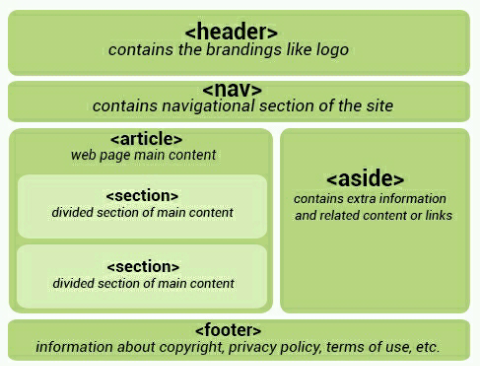

When writing HTML5 documents, one of the first new features that you'll notice is the doc type declaration.
The character encoding (charset) declaration is also simplified.
New Elements in HTML5 article, aside, audio, canvas, datalist, details, embed, footer, header, nav, output, progress, section, video, and even more!.
The default character encoding in HTML5 is UTF-8.
Forms
- The Web Forms 2.0 specification allows for creation of more powerful forms and more compelling user
experiences.
- Date pickers, color pickers, and numeric stepper controls have been added.
- Input field types now include email, search, and URL.
- PUT and DELETE form methods are now supported.
Integrated API (Application Programming Interfaces)
- Drag and Drop
- Audio and Video
- Offline Web Applications
- History
- Local Storage
- Geolocation
- Web Messaging
A generic HTML5 page structure looks like this.
In HTML5, a simple header tag is used, instead.
The header element is appropriate for use inside the body tag.
The footer element is also widely used. Generally we refer to a section located at the very bottom of the web page as the footer.
The following information is usually provided between these tags:
- Contact Information
- Privacy Policy
- Social Media Icons
- Terms of Service
- Copyright Information
- Sitemap and Related Documents
This tag represents a section of a page that links to other pages or to certain sections within the page. This would be a section with navigation links.
Article is a self-contained, independent piece of content that can be used and distributed separately from the rest of the page or site. This could be a forum post, a magazine or newspaper article, a blog entry, a comment, an interactive widget or gadget, or any other independent piece of content.
Section is a logical container of the page or article.
Sections can be used to divide up content within an article.
For example, a homepage could have a section for introducing the company, another for news items, and still
another for contact information.
Each section should be identified, typically by including a heading (h1-h6 element) as a child of the section
element.
Aside is secondary or tangential content which could be considered separate from but indirectly related to the main content. This type of content is often represented in sidebars. When an aside tag is used within an article tag, the content of the aside should be specifically related to that article.
Before HTML5, there was no standard for playing audio files on a web page. The HTML5 audio element specifies a standard for embedding audio in a web page.
More On Audio ElementThe video element is similar to the audio element.
You can specify the video source URL using an attribute in a video element, or using source elements inside the
video element.
The progress element provides the ability to create progress bars on the web. The progress element can be used within headings, paragraphs, or anywhere else in the body.
Value: Specifies how much of the task has been completed.
Max: Specifies how much work the task requires in total.
SVG stands for Scalable Vector Graphics, and is used to draw shapes with HTML-style markup.
It offers several methods for drawing paths, boxes, circles, text, and graphic images.
SVG is not pixel-based, so it can be magnified infinitely with no loss of quality.
HTML5 brings many features and improvements to web form creation. There are new attributes and input types that were introduced to help create better experiences for web users.
More On Html 5 Form Take Me Back Home